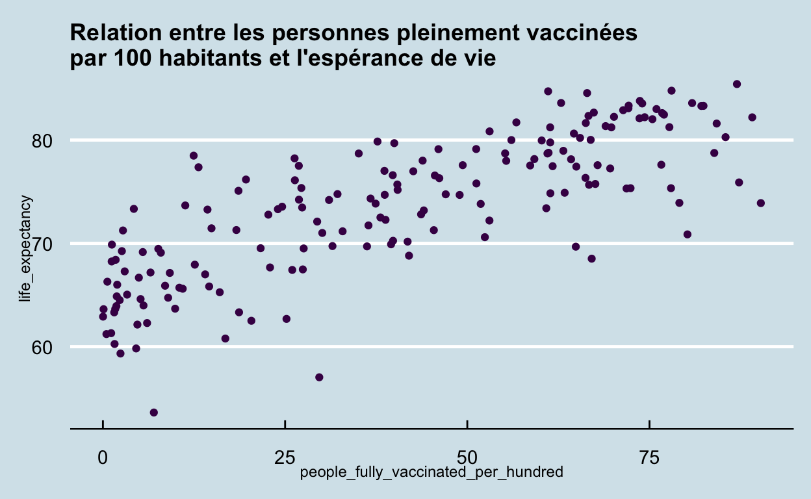

L’analyse des données
Pour analyser notre jeu de données sur la vaccination, nous aurans recours aux analyses par grappes (cluster analysis ou clustering en anglais). L’objectif de ce type d’analyses est de regrouper les observations, les pays dans le cas présent, qui présentent le plus de similitude en fonction de certains caractéristiques. Plus précisément, nous allons créer des groupes de pays comparables selon leur profils de vaccination et des indicateurs comme la population, le PIB et l’espérance de vie.
Pour réaliser notre analyse, nous nous inspirons des méthodologies présentées dans Lapierre and Joanis (2016) et Silge (2021).
Pour nos analyses, nous utilisons le jeux de données des données les plus récentes en lien avec la vaccination. Pour simplifier les analyses, nous avons éliminer toutes observations comportants des valeurs manquantes.
Préparation de l’analyse par grappes
Corrélation
La première étape de notre analyse consiste à vérifier la corrélation entre les variables qui seront utilisées pour l’analyse par grappes. Comme mentionné dans Lapierre and Joanis (2016), les coefficients de corrélation ne devraient pas dépasser 0,8.
À titre de rappel, le coefficient de corrélation mesure la relation deux variables. Plus il est prêt de 1 (-1), plus la relation entre les deux variables est linéaire et positive (négative).
Show code
ggplot(df_corr,
aes(people_fully_vaccinated_per_hundred, life_expectancy)) +
geom_point(shape = "circle", size = 1.5, colour = "#440154") +
ggtitle("Relation entre les personnes pleinement vaccinées \npar 100 habitants et l'espérance de vie") +
theme_economist() +
theme(title = element_text(size = 9))

Par exemple, le graphique ci-haut illustre cette relation entre les variables personnes pleinement vaccinées par 100 hab. (people_fully_vaccinated_per_hundred) et espérance de vie (life_expectancy). Le coefficient de corrélation de 0.79 confirme ce que nous montre le graphique, c’est-à-dire qu’il y a une forte relation positive entre les deux variables.
À l’opposé, le coeffcient de corrélation des variables population (population) et espérance de vie (life_expectancy) est de -0.03, indiquant une très faible relation négative.
Show code
| people_fully_vaccinated_per_hundred | population | income_per_person | gdp | life_expectancy | |
|---|---|---|---|---|---|
| people_fully_vaccinated_per_hundred | 1.00 | -0.01 | 0.74 | 0.19 | 0.79 |
| population | -0.01 | 1.00 | -0.03 | 0.60 | -0.03 |
| income_per_person | 0.74 | -0.03 | 1.00 | 0.28 | 0.72 |
| gdp | 0.19 | 0.60 | 0.28 | 1.00 | 0.18 |
| life_expectancy | 0.79 | -0.03 | 0.72 | 0.18 | 1.00 |
Ce sont les combinaisons suivantes qui présentent les coefficients de corrélation les plus élevé :
people_fully_vaccinated_per_hundredetincome_per_personpeople_fully_vaccinated_per_hundredetlife_expectancyincome_per_personetlife_expectancygdpetpopulation
La bonne nouvelle, c’est qu’aucun de ces coefficients ne dépassent le seuil de 0.8. Nous pouvons donc procéder à l’analyse par grappes avec des variables.
Standardisation des variables
La prochaine étape de l’analyse est de s’assurer de standardiser les données. En effet, comme l’objectif de l’analyse par grappes est de regrouper ensemble les pays les plus similaires, il est important de tenir compte des effets d’échelle. Les variables de population et de PIB (gpd) sont de bons exemples de variables un effet d’échelle pourrait venir influencer les analyses.
Voici d’abord un tableau présentant les statistiques descriptives des varaibles qui nous intéressent pour l’analyse par grappes.
Statistiques descriptives des variables d’intérêtsShow code
stat_descriptive %>%
kbl() %>%
kable_styling(bootstrap_options = c("striped", "hover", "condensed"))
| Variable | Minimum | Maximum | Moyenne | Écart type |
|---|---|---|---|---|
| Personnes pleinement vaccinées par 100 hab. | 0 | 90 | 40 | 27 |
| Population | 98728 | 1393409033 | 35251468 | 113776901 |
| PIB réel estimé par habitant | 673 | 94610 | 18825 | 18845 |
| PIB réel estimé (G$) | 0 | 21146 | 590 | 1892 |
| Espérance de vie | 54 | 85 | 74 | 7 |
Nous standardisons mainenant nos varaibles d’intérêts en utilisant la fonction scale() de R. Voici le même tableau que présenté précédement, mais cette fois en calculant les statistiques descriptives pour nos variables d’intérêt qui ont été standardisés. On peut voir que l’ensemble des variables présentent ainsi une moyenne de 0 et un écart type de 1.
Show code
stat_norm %>%
kbl() %>%
kable_styling(bootstrap_options = c("striped", "hover", "condensed"))
| Variable | Minimum | Maximum | Moyenne | Écart type |
|---|---|---|---|---|
| Personnes pleinement vaccinées par 100 hab. | -1 | 2 | 0 | 1 |
| Population | 0 | 12 | 0 | 1 |
| PIB réel estimé par habitant | -1 | 4 | 0 | 1 |
| PIB réel estimé (G$) | 0 | 11 | 0 | 1 |
| Espérance de vie | -3 | 2 | 0 | 1 |
Analyse par grappes
L’analyse par grappes présentée ici est grandement inspiré et adapté de Silge (2021). Dans cette démonstration, Julia Silge présente une application de l’analyse par grappes avec la méthode des k-means.
Nos premières grappes
Il est généralement recommander de commencer une analyse par grappe avec la méthode des k-means avec 3 grappes. Silge recommande ensuite d’utiliser la fonction tidy() du package broom (compris dans les tidymodels) afin de visualiser les résultats de cette première analyse.
Show code
Length Class Mode
cluster 177 -none- numeric
centers 15 -none- numeric
totss 1 -none- numeric
withinss 3 -none- numeric
tot.withinss 1 -none- numeric
betweenss 1 -none- numeric
size 3 -none- numeric
iter 1 -none- numeric
ifault 1 -none- numeric# A tibble: 3 × 8
people_fully_vac… population income_per_pers… gdp life_expectancy
<dbl> <dbl> <dbl> <dbl> <dbl>
1 1.15 0.256 1.51 0.596 1.11
2 0.227 -0.0946 -0.218 -0.132 0.256
3 -1.14 -0.0528 -0.786 -0.246 -1.15
# … with 3 more variables: size <int>, withinss <dbl>, cluster <fct>Il est maintenant possible d’observer nos trois grappes en produisant un nuage de points à partir de deux variables. À noter que pour arriver à visualiser nos grappes, il est nécessaire de relier nos grappes avec nos données. Pour se faire, nous utilisons la fonction augment().
Show code
augment(vaccination_clust, df_analysis) %>% # on lie les clusters avec la db originale
ggplot(aes(people_fully_vaccinated_per_hundred, life_expectancy, color = .cluster)) +
geom_point() +
ggtitle("Relation entre les personnes pleinement vaccinées \npar 100 habitants et l'espérance de vie, trois grappes") +
theme_economist() +
theme(legend.position = "right",
legend.key.size = unit(1, "cm"),
title = element_text(size = 9),
axis.title = element_text(size = 10),
legend.text = element_text(size = 10),
legend.title=element_text(face = "bold", size = 11))

La lecture du graphique nous indique déjà que l’analyse par grappes est intéressantes pour notre jeu de données. En effet, bien qu’il y ait quelque croisements est certains pays du groupe 1 et du groupe 3, il est évident que les pays tendent à se regrouper selon leur position dans le graphique. Par exemple, les pays du groupe 2 semblent caractérisés par une plus faible proportion de personnes pleinement vaccinées ainsi qu’une plus faible espérance de vie. Pour leur part, les pays du groupe 1 sont à l’opposé avec une plus forte proportion de personnes pleinement vaccinées ainsi qu’une grande espérance de vie.
Il est toutefois possible de constater que nous avons deux points (pays) qui semblent se retrouver en plein milieu du groupe 3. Voyons si nous pouvons raffiner l’analyse par grappe.
Combien de grappes
Que ce soit par le nombre de grappes à constituer ou par la liste des variables inclurent pour identifier nos grappes, les analyses par grappes releve de l’art autant que de la science. À noter que considérant la nature de ce rapport, nous nous limitions ici à un simple test pour évaluer le nombre de grappes à utilser.
Qu’est-ce qui confirme que trois grappes est le bon nombre de grappes à utiliser en fonction notre jeu de données?
One way is to look at the total within-cluster sum of squares and see if it stops dropping off so quickly at some value for k. We can get that from another verb from broom, glance(); let’s try lots of values for k and see what happens to the total sum of squares. Silge (2021)
Show code
kclusts <-
tibble(k = 1:10) %>%
mutate(
kclust = map(k, ~ kmeans(select(df_analysis, -name), .x)),
glanced = map(kclust, glance),
)
kclusts %>%
unnest(cols = c(glanced)) %>%
ggplot(aes(k, tot.withinss)) +
geom_line(alpha = 0.5, size = 1.2, colour = "#440154") +
geom_point(size = 2, colour = "#440154") +
ggtitle("Une aide pour choisir le nombre de grappes") +
theme_economist() +
theme(title = element_text(size = 9))

L’analyse du graphique semble indiquer que c’est avec quatre grappes que nous analyse sera la plus stable. Ajustons notre analyse par grappes en conséquence.
Show code
final_clust <- kmeans(select(df_analysis, -name), centers = 4)
library(plotly)
p <- augment(final_clust, df_analysis) %>%
ggplot(aes(people_fully_vaccinated_per_hundred, life_expectancy, color = .cluster, name = name)) +
geom_point() +
ggtitle("Relation entre les personnes pleinement vaccinées \npar 100 habitants et l'espérance de vie, quatre grappes")
ggplotly(p, height = 500)
C’est ce qui conclu la partie analyse de ce rapport. Dans la prochaine section, nous produisons quelques visualisations pour explorer les résultats de cette analyse par grappes.